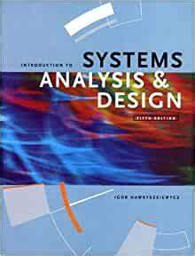
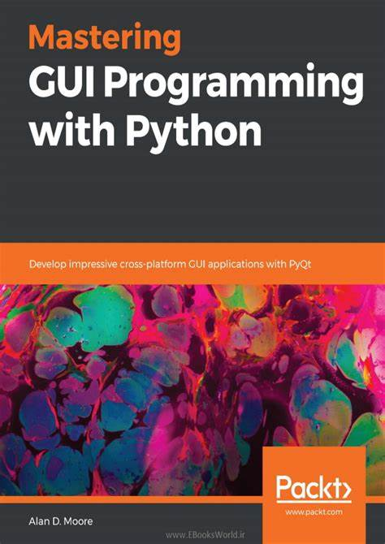
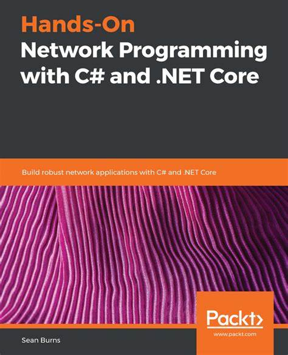
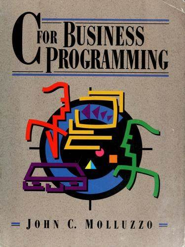
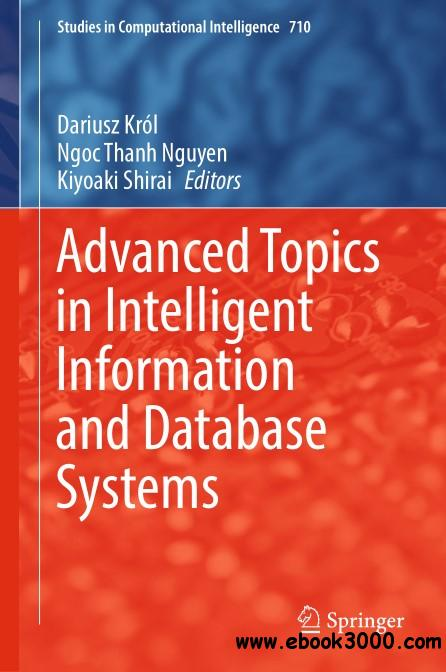
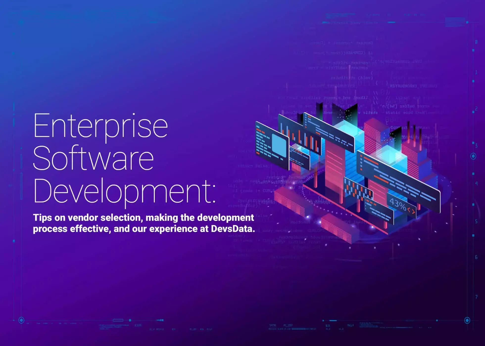

LEVEL 1 classes
CST 8116 Intro to Computer Programming
Possessing the fundamentals of logic, problem-solving and programming language structure provides a solid foundation for further study in the field.
MAT8001 Technical Mathematics for Computer Science
The study of algebraic and transcendental functions is an essential prerequisite to Calculus. Students manipulate algebraic expressions, solve algebraic equations and linear systems and learn the properties of and graph algebraic and transcendental functions.
CST8101 Computer Essentials
The essentials of computer software, hardware, and laptop management form the foundation for building further technical programming skills.
CST8215 Introduction to Database
Databases are used to store data and are a core component of many information technology systems. Students learn the fundamentals of relational databases design using Entity Relation Diagrams (ERDs), and use Structured Query Language (SQL) to create, modify and query a database
CST8300 Achieving Success in Changing Environments
Rapid changes in technology have created personal and employment choices that challenge each of us to find our place as contributing citizens in the emerging society.
ENL1813T Communications I
Communication remains an essential skill sought by employers, regardless of discipline or field of study. Using a practical, vocation-oriented approach, students focus on meeting the requirements of effective communication
LEVEL 2 classes
CST8284 Object Oriented Programming (Java)
Working in the field of information technology as a programmer requires a firm understanding of Object-Oriented Programming (OOP) concepts. Students explore object-oriented programming methodology using the Java programming language. Students practice writing, speaking, reading, listening, locating and documenting information and using technology to communicate professionally.
CST8102 Operating System Fundamentals (GNU/Linux)
Students explore the basic concepts and components of Operating Systems (OS), and how they function and interact with hardware and software components.
CST2355 Database Systems
Database concepts covered include advanced SQL, case structures, rollup and cube operations, metadata manipulation, data storage and retrieval, security and transaction control and data warehousing.
CST8285 Web Programming

The World Wide Web (WWW) has become an integrated part of everyday life. Students develop basic skills of web programming, website design and implementation. JavaScript, HTML5, and PHP are used to explore web-based solutions to problems of increasing interactivity and complexity.
ENL2019 Technical Communication for Engineering Technologies
The ability to communicate effectively in a technically-oriented interdisciplinary workplace is a foundational skill in an innovation-driven economy. Students are exposed to exercises and assignments designed to foster independent and collaborative critical thinking, research, writing, visual communication and presentation skills related to technical topics.
GEP1001 Cooperative Education Readiness
Students are guided through a series of activities that prepare them to conduct a professional job search and succeed in the workplace.
HOS2228 Wine Food and Culture
An understanding of culture can be discovered by exploring eating and drinking customs. Students experience a virtual global tour, exploring culture, history and traditions through the lens of wine and food. Students acquire a sense of the customs of their culture and those of others. Through comparison, observation, discussion, and reflection, students discover something found in all cultures: the importance of food and drink.
LEVEL 3 classes
CST2234 Systems Analysis and Design
Complex information technology systems require extensive planning and design. Guided by industry standard software engineering methodologies, students gain hands-on experience with case studies used to develop systems from inception through elaboration, construction and transition phases.
CST2355 Mobile Graphical Interface Programming
Mobile devices play an instrumental part of everyday life, thus requiring knowledge of mobile graphical user interface development. Students explore graphical user interface programming in a mobile Android environment.
CST8109 Network Programming
Software programming in today's environment requires detailed knowledge of the underlying network topology, its implementation and programming support functions. Gaining an appreciation and perspective of this technology is imperative to developing good network programming applications.
CST8288 Object Oriented Programming with Design Patterns
Design patterns are programming architecture solutions to common challenges faced in software implementation. Students implement best practices of object-oriented program development with software design patterns. Students also apply Unified Modeling Language (UML) program specifications in the Java programming language.
CST8283 Business Programming
Information systems built using the COBOL programming language support important institutions such as government services and the banking sectors. Students create COBOL programs in a business environment using structured methodology in the latest visual programming environment.
LEVEL 4 classes
CST8276 Advanced Database Topics
Database administration is an important role, in particular for deployed information technology systems. Teams and individuals explore advanced database topics including database administration (using Oracle), data governance, globalization, security and advances in database technology. Topic coverage includes business intelligence, data warehouses, data visualization, big data, NoSQL and graph databases.
CST8277 Enterprise Application Programming
Enterprise applications connect clients to services that are based on data stored in database management systems. With a focus on the IT Enterprise, students examine the application enterprise environment using and extending the technologies learned in previous courses.
CST8333 Programming Language Research Project
Learning a new programming language or framework on your own is a challenge faced by programmers on the job as part of their career.